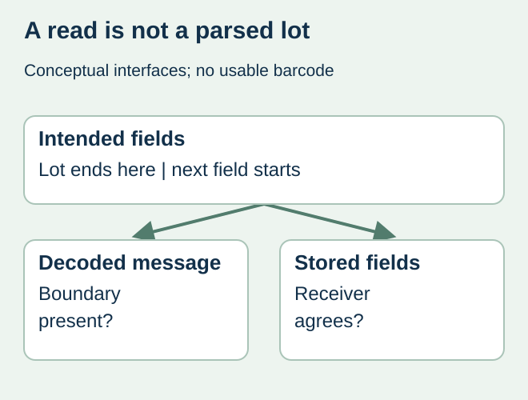
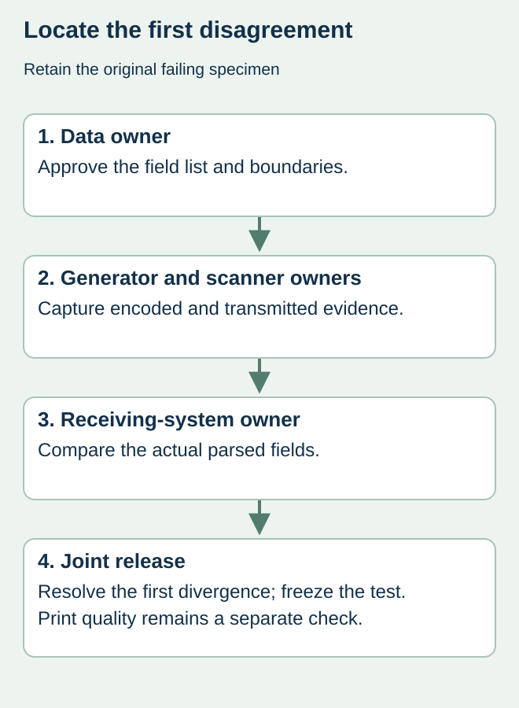

The warehouse scanner reads the label, but the lot field in the receiving application also contains the next data field. Making the barcode larger will not necessarily resolve that problem. The interruption may lie between the approved data structure, barcode generation, scanner transmission and the application parser.
Compare the intended fields, the actual decoded message and the fields stored by the receiving system as separate records. Preserve any separator information in the evidence. A screen that displays only visible characters can conceal the difference that the investigation needs.


Identify the syntax before changing the string
GS1’s FNC1 explanation describes its identification and field-termination roles. Non-predefined-length element strings need the appropriate termination when another element follows. The exact carrier and syntax matter; a GS1 element string is not interchangeable with an arbitrary URL. Have the responsible GS1 implementer confirm the applicable construction.
Do not paste the literal letters FNC1 into a production spreadsheet as a presumed repair. Generator configuration, encoded symbol characters and the transmitted control character are different interfaces. Likewise, parentheses visible around Application Identifiers are not sufficient evidence of how the symbol was encoded.
Build a three-column parsing specimen
| Checkpoint | Keep with the specimen | Question to resolve |
|---|---|---|
| Authorized data | AI, intended value and expected field boundary | Which fields should the recipient receive? |
| Decode output | Carrier identification and control-character-aware output | Is the required boundary present here? |
| Business application | Imported field values and parser configuration reference | Where does interpretation first differ? |
Use a fictitious or redacted message approved by the data owner for the investigation. Include more than one relevant field length where the implementer requests it. A test with a single final field may not exercise the boundary that fails when another field follows.


Change one interface at a time
Ask the printer or code generator owner for an identified output specimen. Ask the equipment owner for a decode capture that represents control characters explicitly, together with the relevant device and software configuration. The receiving-system owner then compares that output with its parser requirement. Retain the original failing specimen instead of repeatedly overwriting it.
For a hypothetical sauce packing run, the lot is expected to end before the expiry field, but the receiver stores both together. The team should locate the first disagreement in that chain. A correctly encoded symbol can still be interpreted incorrectly downstream; conversely, a parser change should not conceal a malformed production message. This is a diagnostic example, not a reported customer event.
Keep data acceptance separate from print quality
A parsing specimen can establish that agreed fields reach a particular application under identified conditions. It does not establish printed-symbol quality, performance on a wet curved bottle or conformance of every label in a shipment. Use barcode verification evidence for the separate physical-output question.
Once the mismatch is resolved, freeze the approved generator input, output specimen and receiving interpretation under the same revision. Record which partner and workflow accepted it. If the receiving software, carrier or field sequence changes, identify which test must be repeated before release. The variable-data guide covers preservation and reconciliation of the complete record set.
Discuss the unresolved label requirement
Send a redacted field specification, intended GS1 carrier, receiving-system requirement and an example showing where the decoded fields diverge. Keep live production identifiers private. Prepare a label specification inquiry. The contact page opens an email draft and lists email or WhatsApp for attachments. Supply, proof options, testing, pricing and timing require project confirmation.